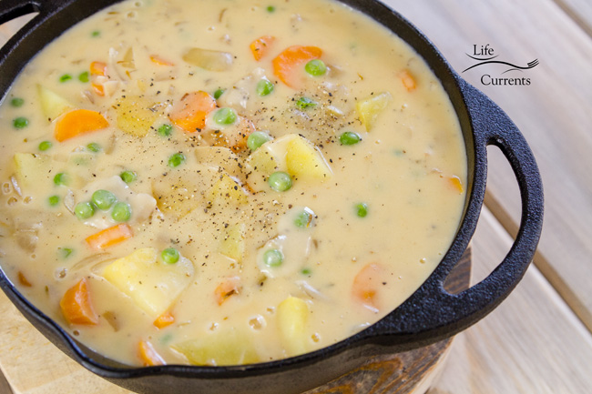

Vegetarian Pot Pie Soup

Warm Tasty Soup Perfect Anyday, Anytime!
- 6 medium Yukon gold potatoes
- 6 tablespoons olive oil divided use
- 2 large onion finely chopped
- 1 ½ cups frozen veggies mix (carrots, peas, corn)
- 4 tablespoons unsalted butter
- 1 cup all-purpose flour
- 4 cups vegetable broth
- 4 cups milk
- 3 teaspoons kosher salt
- 1 teaspoon freshly ground black pepper
- Pierce the potatoes several times with a fork or knife, and microwave until cooked through, about 5-10 minutes, depending on the size of the potatoes and the power of the microwave. Allow potatoes to cool slightly so that you can handle them, and chop into ½-inch to 1-inch dice. Transfer cubed potatoes to a large bowl, and set aside.
- Heat a large pot or Dutch oven over medium-high heat, and add 1 tablespoon oil. Once the oil is hot, sauté the onions until starting to brown and caramelize, about 15-20 minutes. Add the carrots to the onions, and continue to cook, and until tender, about 5-7 minutes. Transfer cooked vegetables to the large bowl with the potatoes, and set aside.
- Reduce the heat to medium, and add the butter and 2 tablespoons oil to the same pot. When the butter has melted, stir in the flour and cook, stirring constantly for 1 minute. Slowly and gradually stir the broth, milk, thyme, salt, and pepper into the flour mixture. Continue to stir constantly as the sauce thickens. Stir in the white wine, and cook for an additional minute.
- Stir the cooked vegetables and the peas into the sauce, and cook on medium-low for 15 minutes, stirring occasionally. Taste for salt and pepper.